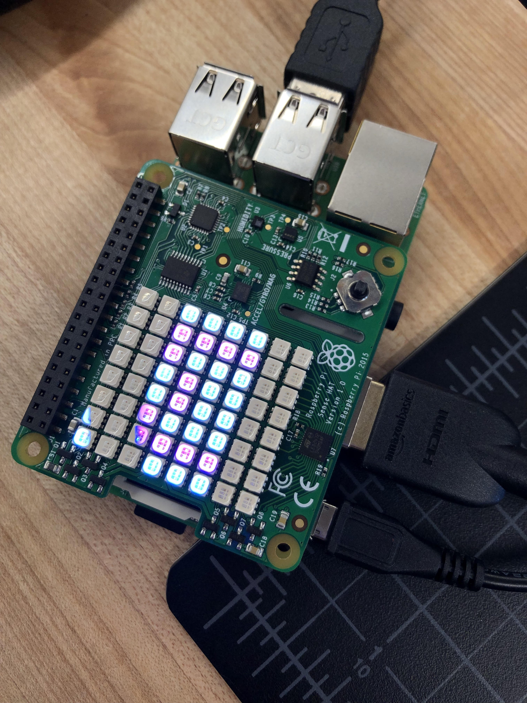
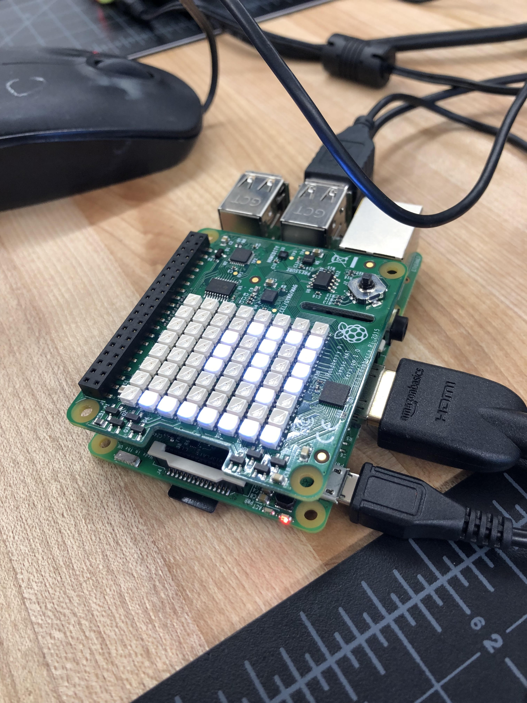

Index
Rotation 10:
Project Description: Raspberry Pi | Electronics
Starting off this project, I was somewhat familair with Raspberry Pi because I was in the Video Game Arcade during the winter where we learned how to program and install games to build our arcade machine. However, this time it is a lot different because I have to manually/physically code on the Raspberry Pi, which was very easy to do. I learned that physical computing requires accurate spelling because a slight error in mis capitalization or misspelling can cause the coding to not work. The little things eventually add up, so one needs to be careful and diligent when typing out the different codes. Also, when trying to code for something, it is a hassle to always open up a new file in the coding software because in the end I have multiple tabs open and don't know which one is whhich. Scratch and Python are coding softwares that were installed in the Raspberry Pi. They are important because they serve as a place to input code and they translate it in their own coding language and transmit it back to the board. My favorite project was connecting the camera onto the Raspberry Pi because I got to take pictures of my friend, Maggie. It was also fun to code for filters and record videos.

